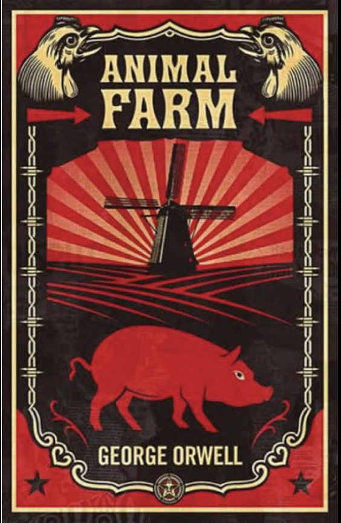
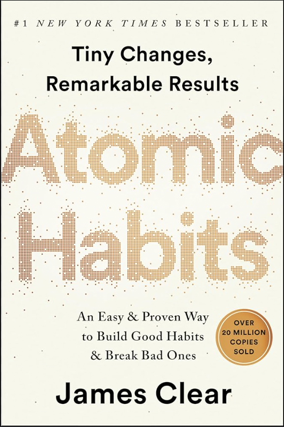
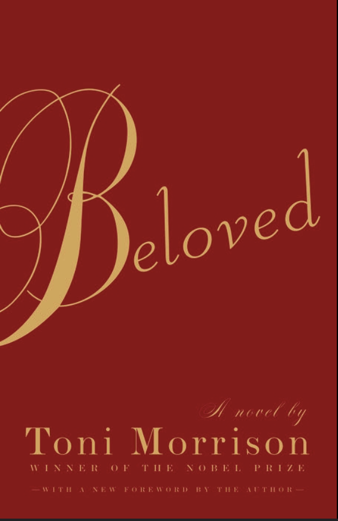
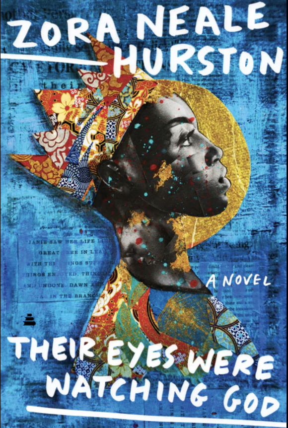

Resources
Top 5 Book Club Recommendations
If you are just starting out and don't know what book you want to start with,
check out the book club's most viewed books of the month!
1984
Paperback, Jun 1949
Animal Farm
Paperback, Aug 1945
Atomic Habits
Paperback, Oct 2018
Beloved
Paperback, Sep 1987
Their Eyes Were Watching God
Paperback, Sep 1937
1984 by George Orwell
Genre: Dystopian, Science Fiction
Summary:A dystopian novel about a totalitarian regime led by Big Brother.
Back of the Book: In a dystopian world where government surveillance is omnipresent, and history is manipulated to control the masses, Winston Smith lives a bleak existence under the oppressive rule of the Party and its enigmatic leader, Big Brother. As Winston begins to question the Party's totalitarian grip, he dares to dream of rebellion, love, and truth. But in a society where independent thought is the ultimate crime, can Winston break free? Orwell's prophetic novel explores the dangers of totalitarianism and the fragility of freedom in a way that resonates with readers today.
Similar Books:
- Brave New World by Aldous Huxley
- Fahrenheit 451 by Ray Bradbury
- The Handmaid's Tale by Margaret Atwood
Animal Farm by George Orwell
Genre: Political Satire, Allegory
Summary: An allegory of the Russian Revolution told through the rebellion of farm animals.
Back of the Book: When the animals of Manor Farm stage a rebellion to overthrow their oppressive human owner, they dream of a society where all creatures are equal. But as the pigs rise to power, the dream of equality begins to crumble under corruption and tyranny. "Animal Farm" is a powerful allegory about the nature of power and politics, reflecting the complexities of revolutions, ideology, and betrayal. Orwell's fable continues to be a chilling commentary on the fragility of justice and freedom.
Similar Books:
- Lord of the Flies by William Golding
- Catch-22 by Joseph Heller
- The Trial by Franz Kafka
Atomic Habits by James Clear
Genre: Self-help, Psychology
Summary:A guide to building good habits and breaking bad ones using scientific insights.
Back of the Book: What if small changes could transform your life? In Atomic Habits, James Clear reveals how tiny habits, if consistently applied, can lead to remarkable results. Combining psychological insights with practical strategies, Clear offers a system for building good habits, breaking bad ones, and mastering the tiny behaviors that lead to big success. Whether your goals are personal or professional, this book will show you how to shape the person you aspire to become—one small habit at a time.
Similar Books:
- The Power of Habit by Charles Duhigg
- Deep Work by Cal Newport
- Mindset by Carol Dweck
Beloved by Toni Morrison
Genre: Historical Fiction
Summary: A haunting story about an escaped slave and the ghost of her dead daughter.
Back of the Book: Sethe was born a slave and escaped to freedom, but years later, she is still haunted by the trauma of her past. Living with her daughter in a house overshadowed by the ghost of a child, Sethe's quiet life is shattered when a mysterious young woman named Beloved appears. Toni Morrison's Beloved is an unflinching exploration of motherhood, memory, and the brutal legacy of slavery in America. Through lyrical prose, Morrison weaves a powerful story of love, loss, and redemption that resonates across generations.
Similar Books:
- The Color Purple by Alice Walker
- Sula by Toni Morrison
- Song of Solomon by Toni Morrison
Their Eyes Were Watching God by Zora Neale Hurston
Genre: African-American Literature
Summary: The journey of Janie Crawford as she explores love and identity.
Back of the Book: Janie Crawford, a woman of strength and beauty, embarks on a journey of self-discovery through love, loss, and resilience. As she reflects on her three marriages and the challenges she has faced, Janie searches for her own voice and a sense of belonging. Set in the early 20th-century South, Their Eyes Were Watching God is a timeless tale of independence, empowerment, and personal freedom. Hurston's lyrical storytelling captures the joys and hardships of life while celebrating the spirit of a woman who refuses to be silenced.
Similar Books:
- The Bluest Eye by Toni Morrison
- Americanah by Chimamanda Ngozi Adichie
- The Warmth of Other Suns by Isabel Wilkerson